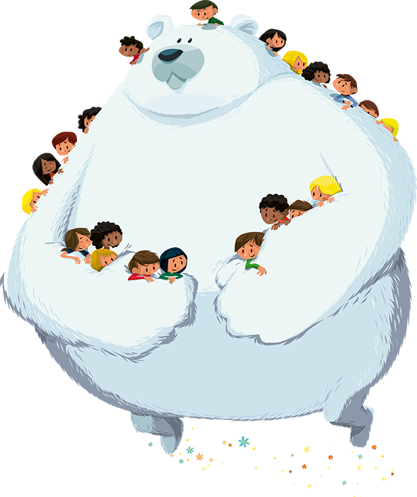
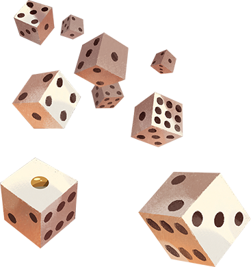

J’ai commencé ma carrière en tant que monitrice sportive à Aventure Parc Wavre. où j’accueillais, équipais et accompagnais les visiteurs dans les parcours acrobatiques dans les arbres, veillant à leur sécurité tout en enrichissant leur expérience. J’étais également responsable de l’organisation et de l’animation des anniversaires pour les plus jeunes, qui ne pouvaient pas grimper.
Au fil du temps, j’ai eu l’opportunité d’endosser davantage de responsabilités, devenant
monitrice de saut à l’élastique puis responsable des teambuildings. En basse saison, nous prenions en charge l’entretien des espaces verts et la maintenance du parc. L’un des projets les plus exigeants mais aussi les plus enrichissants auxquels j’ai participé a été l'implémentation d'un système de ligne de vie continue, une amélioration majeure pour la sécurité du parc.

Avant de me tourner vers le développement web, j’ai travaillé plus de 10 ans dans le secteur du Retail, débutant comme caissière chez Action. Toujours partante pour de nouveaux défis, j'ai rapidement évolué vers un poste d'assistante gérante, où j’ai acquis une solide expérience en gestion d’équipe, gestion des stocks et stratégie commerciale. Toutefois, mes valeurs ne s’alignant plus avec la gestion des ressources humaines de l’entreprise, j’ai rejoint Hema, où j’ai trouvé un environnement plus épanouissant.
Chez Hema, j’ai passé deux ans en tant qu'assistante gérante avant d'être promue gérante. Ce poste m’a permis de développer et d’implémenter des stratégies commerciales tout en mettant un accent fort sur le service client et la cohésion d’équipe. Nous avons ensemble traversé des périodes difficiles, notamment la crise du COVID-19 et l'inondation de notre magasin, renforçant ainsi ma capacité à m’adapter, diriger et trouver des solutions créatives sous pression.
Les jeux de société ont toujours occupé une place spéciale dans ma vie. Après une période où le travail et les études avaient pris le dessus, j’ai décidé de réaligner ma vie avec ma passion. En 2022, j’ai sauté le pas en combinant mes compétences en organisation d’événements, animation et jeux pour créer Dés-mentiel. Ce projet reflète pleinement mes valeurs et mes passions, me permettant de rassembler les gens à travers des expériences ludiques uniques.
Ma trajectoire a pris une tournure encore plus excitante lorsque j’ai découvert la communauté passionnée de Wanna Play Séduite par leur vision, j’ai rapidement rejoint l’équipe en tant que bénévole, apportant mon énergie et ma créativité à l’organisation d’événements inoubliables, notamment le festival Wanna Play in Brussels 2022.
J’aime partager ma passion et initier d’autres personnes à cet univers fascinant que ce soit en famille, entre amis ou avec des passionés.
